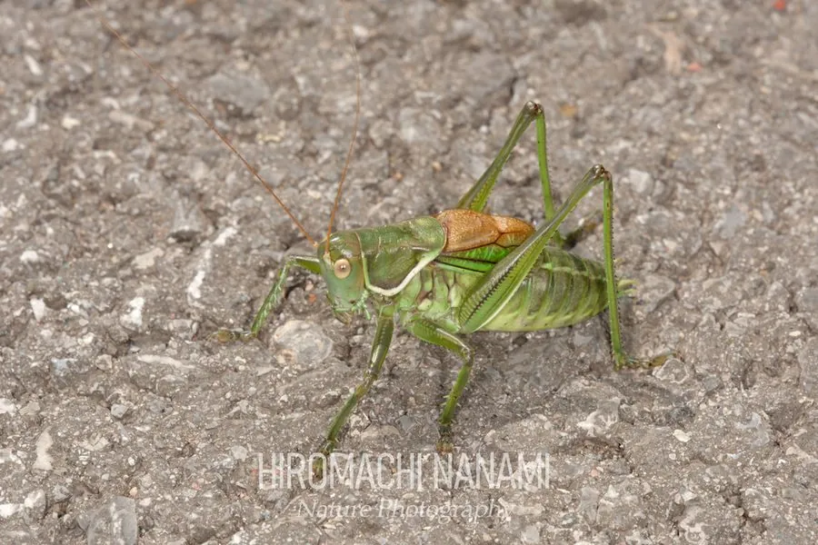

昆虫 · 动物界
蝈蝈 Gampsocleis gratiosa

中国北方著名的鸣虫，体形粗壮、体色翠绿或黄褐，雄虫前翅发达，鸣声清脆响亮，夏秋两季常被饲养赏听。
- 分类
- 门节肢动物门纲昆虫纲目直翅目科螽斯科属蝈蝈属
- 栖息环境
- 灌丛、草地、农田与林缘，喜干燥向阳的环境
- 地理分布
- 中国北方、朝鲜半岛及蒙古东部的灌丛与草地
- 保护级别
- 暂无评估
物种志
蝈蝈成虫体长 3.5–4.5 cm，体形粗壮。它的体色为翠绿或黄褐色，头部较大，触角细长；前翅较短，覆盖在腹部之上，雄虫前翅有发达的发声结构，靠摩擦翅脉发出清脆的鸣声；后足强壮善跳，雌虫腹部末端有细长的产卵管。
蝈蝈分布于中国北方、朝鲜半岛和蒙古东部，栖息于灌丛、草地、农田和林缘，喜干燥向阳的环境。它是杂食性昆虫，取食植物嫩叶、花、果实，也捕食小型昆虫；成虫多在白天活动，常爬到灌丛顶端鸣叫。夏秋季节雄虫鸣声最盛，用来吸引雌虫，雌虫将卵产在土中或植物茎内，以卵越冬。蝈蝈在中国有上千年的饲养赏玩传统，与蟋蟀、油葫芦并称三大鸣虫。
形态与习性
- 食性植物嫩叶、花、果实，也捕食小型昆虫
- 体长成虫 3.5–4.5 cm
- 发声雄虫摩擦前翅翅脉鸣叫
- 活动节律白天活动，常爬到灌丛顶端鸣叫
- 繁殖雌虫将卵产在土中或植物茎内，以卵越冬
- 文化与蟋蟀、油葫芦并称三大鸣虫
趣味知识
- 蝈蝈与蟋蟀、油葫芦并称为中国三大鸣虫。
- 只有雄蝈蝈会鸣叫，靠摩擦前翅发声吸引雌虫。
- 雌蝈蝈腹部末端有细长的产卵管，用于把卵产在植物茎内。
- 蝈蝈在中国已有上千年的饲养赏玩传统。